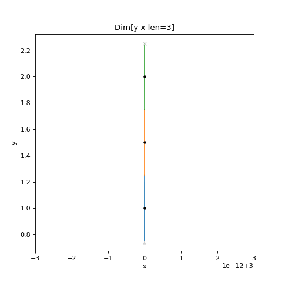
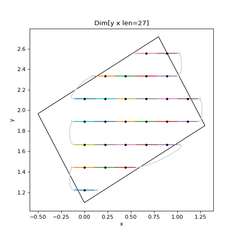
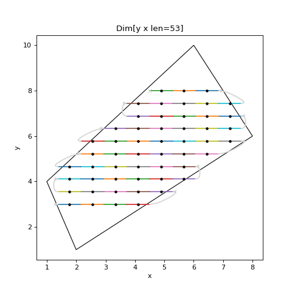

API¶
scanspec¶
The top level scanspec module contains a number of packages that can be used from code:
scanspec.core: Core classes likeDimensionandPathscanspec.specs:Specand its subclassesscanspec.regions:Regionand its subclassesscanspec.plot:plot_specto visualize a scanscanspec.service: Defines queries and field structure in graphQL such asPointsResponse
- scanspec.__version__: str¶
Version number as calculated by https://github.com/dls-controls/versiongit
scanspec.core¶
- class scanspec.core.Serializable[source]¶
Base class for registering apischema (de)serialization conversions. Each direct subclass will be registered for (de)serialization as a tagged union of its subclasses, using the pattern documented here: https://wyfo.github.io/apischema/examples/subclass_tagged_union/
See also
https://github.com/wyfo/apischema/discussions/56#discussioncomment-336580 for discussion on tagged unions and alternative constructors
- classmethod deserialize(serialization: Mapping[str, Any]) → scanspec.core.S[source]¶
Deserialize from a dictionary representation
- scanspec.core.S¶
A subclass of Serializable
alias of TypeVar(‘S’, bound=
Serializable)
- scanspec.core.AxesPoints¶
Map of axes to points_ndarray E.g. {xmotor: array([0, 1, 2]), ymotor: array([2, 2, 2])}
alias of
Dict[str,numpy.ndarray]
- scanspec.core.if_instance_do(x, cls: Type, func: Callable)[source]¶
If x is of type cls then return func(x), otherwise return NotImplemented. Used as a helper when implementing operator overloading
- class scanspec.core.Dimension(midpoints: Dict[str, numpy.ndarray], lower: Optional[Dict[str, numpy.ndarray]] = None, upper: Optional[Dict[str, numpy.ndarray]] = None, snake: bool = False)[source]¶
Bases:
objectA dimension is a repeatable, possibly snaking structure of frames along a number of axes.
Represents a linear stack of frames. A list of Dimensions is interpreted as nested from slowest moving to fastest moving, so each faster Dimension will iterate once per position of the slower Dimension. When fly-scanning the axis will traverse lower-midpoint-upper on the fastest Dimension for each point in the scan.
- Parameters
midpoints – The centre points of the scan for each axis
lower – Lower bounds if different from midpoints
upper – Upper bounds if different from midpoints
snake – If True then every other iteration of this Dimension within a slower moving Dimension will be reversed
See also
- midpoints¶
The centre points of the scan for each axis
- lower¶
The lower bounds of each scan point in each axis for fly-scanning
- upper¶
The upper bounds of each scan point in each axis for fly-scanning
- snake¶
Whether every other iteration of this Dimension within a slower moving Dimension will be reversed
- axes() → List[source]¶
The axes that are present in
midpoints,lowerandupperwhich will move during the scan
- tile(reps: int) → scanspec.core.Dimension[source]¶
Return a new Dimension that iterates self reps times
>>> dim = Dimension({"x": np.array([1, 2, 3])}) >>> dim.tile(reps=2).midpoints {'x': array([1, 2, 3, 1, 2, 3])}
- repeat(reps: int) → scanspec.core.Dimension[source]¶
Return a new Dimension that repeats each point in self reps times
>>> dim = Dimension({"x": np.array([1, 2, 3])}) >>> dim.repeat(reps=2).midpoints {'x': array([1, 1, 2, 2, 3, 3])}
- mask(mask: numpy.ndarray) → scanspec.core.Dimension[source]¶
Return a new Dimension that produces only points from self in the mask
>>> dim = Dimension({"x": np.array([1, 2, 3])}) >>> dim.mask(np.array([1, 0, 1])).midpoints {'x': array([1, 3])}
- copy() → scanspec.core.Dimension[source]¶
Return a shallow copy of the current Dimension (dicts copied, arrays within them are not)
- concat(other: scanspec.core.Dimension) → scanspec.core.Dimension[source]¶
Return a new Dimension with arrays from self and other concatenated together. Require both Dimensions to have the same axes and snake settings
>>> dim = Dimension({"x": np.array([1, 2, 3])}) >>> dim2 = Dimension({"x": np.array([5, 6, 7])}) >>> dim.concat(dim2).midpoints {'x': array([1, 2, 3, 5, 6, 7])}
- zip(other: scanspec.core.Dimension) → scanspec.core.Dimension[source]¶
Return a new Dimension with arrays from axes of self and other merged together. Require both Dimensions to not share axes, and to have the snake settings
>>> dimx = Dimension({"x": np.array([1, 2, 3])}) >>> dimy = Dimension({"y": np.array([5, 6, 7])}) >>> dimx.zip(dimy).midpoints {'x': array([1, 2, 3]), 'y': array([5, 6, 7])}
- scanspec.core.squash_dimensions(dimensions: List[scanspec.core.Dimension], check_path_changes=True) → scanspec.core.Dimension[source]¶
Squash a list of nested Dimensions into a single one.
- Parameters
dimensions – The Dimensions to squash, from slowest to fastest moving
check_path_changes – If True then check that nesting the output Dimension within other Dimensions will provide the same path as nesting the input Dimension within other Dimensions
>>> dimx = Dimension({"x": np.array([1, 2])}, snake=True) >>> dimy = Dimension({"y": np.array([3, 4])}) >>> squash_dimensions([dimy, dimx]).midpoints {'y': array([3, 3, 4, 4]), 'x': array([1, 2, 2, 1])}
- class scanspec.core.Path(dimensions: List[scanspec.core.Dimension], start: int = 0, num: Optional[int] = None)[source]¶
Bases:
objectA consumable route through one or more dimensions, representing a scan path.
- Parameters
dimensions – The Dimensions describing the scan, from slowest to fastest moving
start – The index of where in the Path to start
num – The number of scan points to produce after start. None means up to the end
See also
- dimensions¶
The Dimensions describing the scan, from slowest to fastest moving
- index¶
Index that is next to be consumed
- end_index¶
Index of the end point, one more than the last index that will be produced
- consume(num: Optional[int] = None) → scanspec.core.Dimension[source]¶
Consume at most num points from the Path and return as a Dimension
>>> dimx = Dimension({"x": np.array([1, 2])}, snake=True) >>> dimy = Dimension({"y": np.array([3, 4])}) >>> path = Path([dimy, dimx]) >>> path.consume(3).midpoints {'y': array([3, 3, 4]), 'x': array([1, 2, 2])} >>> path.consume(3).midpoints {'y': array([4]), 'x': array([1])} >>> path.consume(3).midpoints {'y': array([], dtype=int64), 'x': array([], dtype=int64)}
- class scanspec.core.Midpoints(dimensions: List[scanspec.core.Dimension])[source]¶
Bases:
objectConvenience iterable that produces the scan points for each axis. For better performance, consume from a
Pathinstead.- Parameters
dimensions – The Dimensions describing the scan, from slowest to fastest moving
See also
>>> dimx = Dimension({"x": np.array([1, 2])}, snake=True) >>> dimy = Dimension({"y": np.array([3, 4])}) >>> mp = Midpoints([dimy, dimx]) >>> for p in mp: print(p) {'y': 3, 'x': 1} {'y': 3, 'x': 2} {'y': 4, 'x': 2} {'y': 4, 'x': 1}
- dimensions¶
The Dimensions describing the scan, from slowest to fastest moving
- property axes: List¶
The axes that will be present in each points dictionary
scanspec.specs¶
- class scanspec.specs.Spec[source]¶
Bases:
scanspec.core.SerializableDefinition: A spec is a serializable representation of the type, parameters and axis names required to produce one or more dimensions.
Description: Abstract baseclass for the specification of a scan. Supports operators:
*: OuterProductof two Specs, nesting the second within the first+:Ziptwo Specs together, iterating in tandem&:Maskthe Spec with aRegion, excluding midpoints outside of it~:Snakethe Spec, reversing every other iteration of it
- axes() → List[source]¶
Return the list of axes that are present in the scan, from slowest moving to fastest moving
- create_dimensions(bounds=True, nested=False) → List[scanspec.core.Dimension][source]¶
Implemented by subclasses to produce the
Dimensionlist that contribute to midpoints, from slowest moving to fastest moving
- path() → scanspec.core.Path[source]¶
Return a
Paththrough the scan that can be consumed in chunks to give midpoints and bounds
- midpoints() → scanspec.core.Midpoints[source]¶
Return
Midpointsthat can be iterated point by point
- class scanspec.specs.Product(outer, inner)[source]¶
Bases:
scanspec.specs.SpecOuter product of two Specs, nesting inner within outer. This means that inner will run in its entirety at each point in outer.
# Example Spec from scanspec.plot import plot_spec from scanspec.specs import Line spec = Line("y", 1, 2, 3) * Line("x", 3, 4, 12) plot_spec(spec)
(Source code, png, hires.png, pdf)

{kind=link}
{kind=link}
- class scanspec.specs.Zip(left, right)[source]¶
Bases:
scanspec.specs.SpecRun two Specs in parallel, merging their midpoints together. Typically formed using the
+operator.- Parameters
Dimensions are merged by:
If right creates a single Dimension of size 1, expand it to the size of the fastest Dimension created by left
Merge individual dimensions together from fastest to slowest
This means that Zipping a Spec producing Dimensions [l2, l1] with a Spec producing Dimension [r1] will assert len(l1)==len(r1), and produce Dimensions [l2, l1+r1].
# Example Spec from scanspec.plot import plot_spec from scanspec.specs import Line spec = Line("z", 1, 2, 3) * Line("y", 3, 4, 5) + Line("x", 4, 5, 5) plot_spec(spec)
(Source code, png, hires.png, pdf)

{kind=link}
{kind=link}
- class scanspec.specs.Mask(spec, region, check_path_changes=True)[source]¶
Bases:
scanspec.specs.SpecRestrict the given Spec to only the midpoints that fall inside of the given Region.
- Parameters
Typically created with the
&operator. It also pushes down the& | ^ -operators to itsRegionto avoid the need for brackets on combinations of Regions.If a Region spans multiple Dimensions, these Dimensions will be squashed together.
# Example Spec from scanspec.plot import plot_spec from scanspec.specs import Line from scanspec.regions import Circle spec = Line("y", 1, 3, 3) * Line("x", 3, 5, 5) & Circle("x", "y", 4, 2, 1.2) plot_spec(spec)
(Source code, png, hires.png, pdf)

{kind=link}
{kind=link}
- class scanspec.specs.Snake(spec)[source]¶
Bases:
scanspec.specs.SpecRun the Spec in reverse on every other iteration when nested inside another Spec. Typically created with the
~operator.- Parameters
spec (Spec) – The Spec to run in reverse every other iteration
# Example Spec from scanspec.plot import plot_spec from scanspec.specs import Line spec = Line("y", 1, 3, 3) * ~Line("x", 3, 5, 5) plot_spec(spec)
(Source code, png, hires.png, pdf)

{kind=link}
{kind=link}
- class scanspec.specs.Concat(left, right)[source]¶
Bases:
scanspec.specs.SpecConcatenate two Specs together, running one after the other. Each Dimension of left and right must contain the same axes.
- Parameters
# Example Spec from scanspec.plot import plot_spec from scanspec.specs import Line, Concat spec = Concat(Line("x", 1, 3, 3), Line("x", 4, 5, 5)) plot_spec(spec)
(Source code, png, hires.png, pdf)

{kind=link}
{kind=link}
- class scanspec.specs.Squash(spec, check_path_changes=True)[source]¶
Bases:
scanspec.specs.SpecSquash the Dimensions together of the scan (but not the midpoints) into one linear stack.
- Parameters
# Example Spec from scanspec.plot import plot_spec from scanspec.specs import Line, Squash spec = Squash(Line("y", 1, 2, 3) * Line("x", 0, 1, 4)) plot_spec(spec)
(Source code, png, hires.png, pdf)

{kind=link}
{kind=link}
- class scanspec.specs.Line(axis, start, stop, num)[source]¶
Bases:
scanspec.specs.SpecLinearly spaced points in the given axis, with first and last points centred on start and stop.
- Parameters
# Example Spec from scanspec.plot import plot_spec from scanspec.specs import Line spec = Line("x", 1, 2, 5) plot_spec(spec)
(Source code, png, hires.png, pdf)

- static bounded(axis, lower, upper, num) → scanspec.specs.Line[source]¶
Specify a Line by extreme bounds instead of centre points.
- Parameters
# Example Spec from scanspec.plot import plot_spec from scanspec.specs import Line spec = Line.bounded("x", 1, 2, 5) plot_spec(spec)
(Source code, png, hires.png, pdf)

{kind=link}
{kind=link}
{kind=link}
{kind=link}
- class scanspec.specs.Static(axis, value, num=1)[source]¶
Bases:
scanspec.specs.SpecA static point, repeated “num” times, with “axis” at “value”. Can be used to set axis=value at every point in a scan.
- Parameters
# Example Spec from scanspec.plot import plot_spec from scanspec.specs import Line, Static spec = Line("y", 1, 2, 3) + Static("x", 3) plot_spec(spec)
(Source code, png, hires.png, pdf)

- static duration(duration, num=1) → scanspec.specs.Static[source]¶
A static spec with no motion, only a duration repeated “num” times
- Parameters
# Example Spec from scanspec.plot import plot_spec from scanspec.specs import Line, Static spec = Line("y", 1, 2, 3) + Static.duration(0.1) plot_spec(spec)
(Source code, png, hires.png, pdf)

{kind=link}
{kind=link}
{kind=link}
{kind=link}
- class scanspec.specs.Spiral(x_axis, y_axis, x_start, y_start, x_range, y_range, num, rotate=0.0)[source]¶
Bases:
scanspec.specs.SpecArchimedean spiral of “x_axis” and “y_axis”, starting at centre point (“x_start”, “y_start”) with angle “rotate”. Produces “num” points in a spiral spanning width of “x_range” and height of “y_range”
- Parameters
x_axis (str) – An identifier for what to move for x
y_axis (str) – An identifier for what to move for y
x_start (float) – x centre of the spiral
y_start (float) – y centre of the spiral
x_range (float) – x width of the spiral
y_range (float) – y width of the spiral
num (int) – Number of points to produce - minimum: 1
rotate (float) – How much to rotate the angle of the spiral
# Example Spec from scanspec.plot import plot_spec from scanspec.specs import Spiral spec = Spiral("x", "y", 1, 5, 10, 50, 30) plot_spec(spec)
(Source code, png, hires.png, pdf)
- static spaced(x_axis, y_axis, x_start, y_start, radius, dr, rotate=0.0) → scanspec.specs.Spiral[source]¶
Specify a Spiral equally spaced in “x_axis” and “y_axis” by specifying the “radius” and difference between each ring of the spiral “dr”
- Parameters
x_axis (str) – An identifier for what to move for x
y_axis (str) – An identifier for what to move for y
x_start (float) – x centre of the spiral
y_start (float) – y centre of the spiral
radius (float) – radius of the spiral
dr (float) – difference between each ring
rotate (float) – How much to rotate the angle of the spiral
# Example Spec from scanspec.plot import plot_spec from scanspec.specs import Spiral spec = Spiral.spaced("x", "y", 0, 0, 10, 3) plot_spec(spec)
(Source code, png, hires.png, pdf)

{kind=link}
{kind=link}
{kind=link}
{kind=link}
- scanspec.specs.DURATION = 'DURATION'¶
Can be used as a special key to indicate how long each point should be
- scanspec.specs.REPEAT = 'REPEAT'¶
Can be used as a special key to indicate repeats of a whole spec
- scanspec.specs.fly(spec: scanspec.specs.Spec, duration: float) → scanspec.specs.Spec[source]¶
Flyscan, zipping TIME=duration for every frame
- Parameters
spec – The source
Specto continuously moveduration – How long to spend at each point in the spec
# Example Spec from scanspec.plot import plot_spec from scanspec.specs import Line, fly spec = fly(Line("x", 1, 2, 3), 0.1) plot_spec(spec)
(Source code, png, hires.png, pdf)

{kind=link}
{kind=link}
- scanspec.specs.step(spec: scanspec.specs.Spec, duration: float, num: int = 1) → scanspec.specs.Spec[source]¶
Step scan, adding num x TIME=duration as an inner dimension for every midpoint
- Parameters
spec – The source
Specwith midpoints to move to and stopduration – The duration of each scan point
num – Number of points to produce with given duration at each of point in the spec
# Example Spec from scanspec.plot import plot_spec from scanspec.specs import Line, step spec = step(Line("x", 1, 2, 3), 0.1) plot_spec(spec)
(Source code, png, hires.png, pdf)

{kind=link}
{kind=link}
- scanspec.specs.repeat(spec: scanspec.specs.Spec, num: int, blend=False) → scanspec.specs.Spec[source]¶
Repeat spec num times
- Parameters
spec – The source
Specthat will be iteratednum – The number of times to repeat it
blend – If True and the slowest dimension of spec is snaked then the end and start of consecutive iterations of Spec will be blended together, leaving no gap
scanspec.regions¶
- class scanspec.regions.Region[source]¶
Bases:
scanspec.core.SerializableAbstract baseclass for a Region that can
MaskaSpec. Supports operators:|:UnionOftwo Regions, midpoints present in either&:IntersectionOftwo Regions, points present in both-:DifferenceOftwo Regions, points present in first not second^:SymmetricDifferenceOftwo Regions, points present in one not both
- axis_sets() → List[Set[str]][source]¶
Implemented by subclasses to produce the non-overlapping sets of axes this region spans
- mask(points: Dict[str, numpy.ndarray]) → numpy.ndarray[source]¶
Implemented by subclasses to produce a mask of which points are in the region
- scanspec.regions.get_mask(region: scanspec.regions.Region, points: Dict[str, numpy.ndarray]) → numpy.ndarray[source]¶
If there is an overlap of axes of region and frames return a mask of the frames in the region, otherwise return all ones
- class scanspec.regions.CombinationOf(left, right)[source]¶
Bases:
scanspec.regions.RegionAbstract baseclass for a combination of two regions, left and right
- class scanspec.regions.UnionOf(left, right)[source]¶
Bases:
scanspec.regions.CombinationOfA point is in UnionOf(a, b) if it is in either a or b. Typically created with the
|operator- Parameters
>>> r = Range("x", 0.5, 2.5) | Range("x", 1.5, 3.5) >>> r.mask({"x": np.array([0, 1, 2, 3, 4])}) array([False, True, True, True, False])
- class scanspec.regions.IntersectionOf(left, right)[source]¶
Bases:
scanspec.regions.CombinationOfA point is in IntersectionOf(a, b) if it is in both a and b. Typically created with the
&operator- Parameters
>>> r = Range("x", 0.5, 2.5) & Range("x", 1.5, 3.5) >>> r.mask({"x": np.array([0, 1, 2, 3, 4])}) array([False, False, True, False, False])
- class scanspec.regions.DifferenceOf(left, right)[source]¶
Bases:
scanspec.regions.CombinationOfA point is in DifferenceOf(a, b) if it is in a and not in b. Typically created with the
-operator- Parameters
>>> r = Range("x", 0.5, 2.5) - Range("x", 1.5, 3.5) >>> r.mask({"x": np.array([0, 1, 2, 3, 4])}) array([False, True, False, False, False])
- class scanspec.regions.SymmetricDifferenceOf(left, right)[source]¶
Bases:
scanspec.regions.CombinationOfA point is in SymmetricDifferenceOf(a, b) if it is in either a or b, but not both. Typically created with the
^operator- Parameters
>>> r = Range("x", 0.5, 2.5) ^ Range("x", 1.5, 3.5) >>> r.mask({"x": np.array([0, 1, 2, 3, 4])}) array([False, True, False, True, False])
- class scanspec.regions.Range(axis, min, max)[source]¶
Bases:
scanspec.regions.RegionMask contains points of key >= min and <= max
- Parameters
>>> r = Range("x", 1, 2) >>> r.mask({"x": np.array([0, 1, 2, 3, 4])}) array([False, True, True, False, False])
- class scanspec.regions.Rectangle(x_axis, y_axis, x_min, y_min, x_max, y_max, angle=0.0)[source]¶
Bases:
scanspec.regions.RegionMask contains points of axis within a rotated xy rectangle
- Parameters
x_axis (str) – The name matching the x axis of the spec
y_axis (str) – The name matching the y axis of the spec
x_min (float) – Minimum inclusive x value in the region
y_min (float) – Minimum inclusive y value in the region
x_max (float) – Maximum inclusive x value in the region
y_max (float) – Maximum inclusive y value in the region
angle (float) – Clockwise rotation angle of the rectangle
# Example Spec from scanspec.plot import plot_spec from scanspec.specs import Line from scanspec.regions import Rectangle grid = Line("y", 1, 3, 10) * ~Line("x", 0, 2, 10) spec = grid & Rectangle("x", "y", 0, 1.1, 1.5, 2.1, 30) plot_spec(spec)
(Source code, png, hires.png, pdf)

{kind=link}
{kind=link}
- class scanspec.regions.Polygon(x_axis, y_axis, x_verts, y_verts)[source]¶
Bases:
scanspec.regions.RegionMask contains points of axis within a rotated xy polygon
- Parameters
x_axis (str) – The name matching the x axis of the spec
y_axis (str) – The name matching the y axis of the spec
x_verts (typing.List[float]) – The Nx1 x coordinates of the polygons vertices - minLength: 3
y_verts (typing.List[float]) – The Nx1 y coordinates of the polygons vertices - minLength: 3
# Example Spec from scanspec.plot import plot_spec from scanspec.specs import Line from scanspec.regions import Polygon grid = Line("y", 3, 8, 10) * ~Line("x", 1 ,8, 10) spec = grid & Polygon("x", "y", [1.0, 6.0, 8.0, 2.0], [4.0, 10.0, 6.0, 1.0]) plot_spec(spec)
(Source code, png, hires.png, pdf)

{kind=link}
{kind=link}
- class scanspec.regions.Circle(x_axis, y_axis, x_middle, y_middle, radius)[source]¶
Bases:
scanspec.regions.RegionMask contains points of axis within an xy circle of given radius
- Parameters
# Example Spec from scanspec.plot import plot_spec from scanspec.specs import Line from scanspec.regions import Circle grid = Line("y", 1, 3, 10) * ~Line("x", 0, 2, 10) spec = grid & Circle("x", "y", 1, 2, 0.9) plot_spec(spec)
(Source code, png, hires.png, pdf)

{kind=link}
{kind=link}
- class scanspec.regions.Ellipse(x_axis, y_axis, x_middle, y_middle, x_radius, y_radius, angle=0.0)[source]¶
Bases:
scanspec.regions.RegionMask contains points of axis within an xy ellipse of given radius
- Parameters
x_axis (str) – The name matching the x axis of the spec
y_axis (str) – The name matching the y axis of the spec
x_middle (float) – The central x point of the ellipse
y_middle (float) – The central y point of the ellipse
x_radius (float) – The radius along the x axis of the ellipse - exclusiveMinimum: 0
y_radius (float) – The radius along the y axis of the ellipse - exclusiveMinimum: 0
angle (float) – The angle of the ellipse (degrees)
# Example Spec from scanspec.plot import plot_spec from scanspec.specs import Line from scanspec.regions import Ellipse grid = Line("y", 3, 8, 10) * ~Line("x", 1 ,8, 10) spec = grid & Ellipse("x", "y", 5, 5, 2, 3, 75) plot_spec(spec)
(Source code, png, hires.png, pdf)

{kind=link}
{kind=link}
- scanspec.regions.find_regions(obj) → Iterator[scanspec.regions.Region][source]¶
Recursively iterate over obj and its children, yielding any Region instances found
scanspec.plot¶
- scanspec.plot.plot_spec(spec: scanspec.specs.Spec)[source]¶
Plot a spec, drawing the path taken through the scan, using a different colour for each point, grey for the turnarounds, and marking the centrepoints with a filled circle if there are less than 200 of them. If the scan is 2D then 2D regions are shown in black.
# Example Spec from scanspec.plot import plot_spec from scanspec.specs import Line from scanspec.regions import Circle cube = Line("z", 1, 3, 3) * Line("y", 1, 3, 10) * ~Line("x", 0, 2, 10) spec = cube & Circle("x", "y", 1, 2, 0.9) plot_spec(spec)
(Source code, png, hires.png, pdf)
{kind=link}
{kind=link}
scanspec.service¶
- class scanspec.service.Points(points: numpy.ndarray)[source]¶
Bases:
objectA collection of singular or multidimensional locations in scan space
- class scanspec.service.AxisFrames(axis: str, lower: scanspec.service.Points, midpoints: scanspec.service.Points, upper: scanspec.service.Points)[source]¶
Bases:
objectA collection of frames (comprising midpoints with lower and upper bounds) present in each axis of the Spec
- lower: scanspec.service.Points¶
The lower bounds of each frame (used when fly scanning)
- midpoints: scanspec.service.Points¶
The midpoints of each frame
- upper: scanspec.service.Points¶
The upper bounds of each frame (used when fly scanning)
- class scanspec.service.PointsResponse(chunk: scanspec.core.Dimension, total_frames: int)[source]¶
Bases:
objectThe highest level of the getPoints query, allowing users to customise their return data from the points present in the scan to some metadata about them
- returned_frames: int¶
The number of frames returned by the getPoints query (controlled by the max_points argument)
- axes() → List[scanspec.service.AxisFrames][source]¶
A list of all of the points present in the spec per axis
- scanspec.service.validate_spec(spec: scanspec.specs.Spec) → Any[source]¶
A query used to confirm whether or not the Spec will produce a viable scan
- scanspec.service.get_points(spec: scanspec.specs.Spec, max_frames: Optional[int] = 100000) → scanspec.service.PointsResponse[source]¶
A query that takes a Spec and calculates the points present in the scan (for each axis) plus some metadata about the points.
- Parameters
[spec] – [The specification of the scan]
[max_frames] – [The maximum number of frames the user wishes to receive]
- Returns
- [A dataclass containing information about the scan points
present in the spec]
- Return type
- scanspec.service.reduce_frames(dims: List[scanspec.core.Dimension], max_frames: int) → scanspec.core.Path[source]¶
Removes frames from a spec such that it produces a number that is closest to the max points value
- scanspec.service.sub_sample(dim: scanspec.core.Dimension, ratio: float) → scanspec.core.Dimension[source]¶
Removes frames from a dimension whilst preserving its core structure